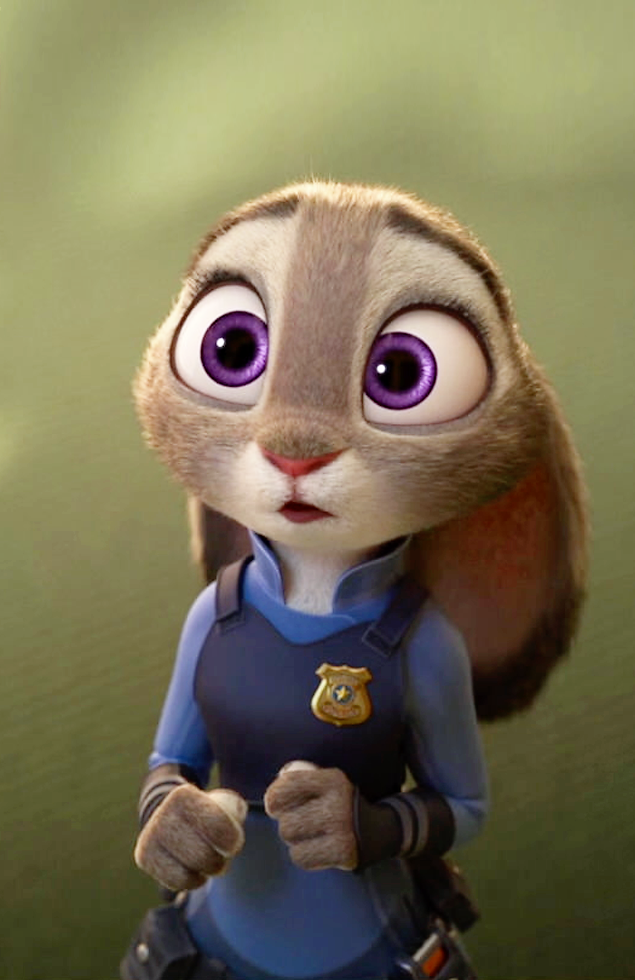
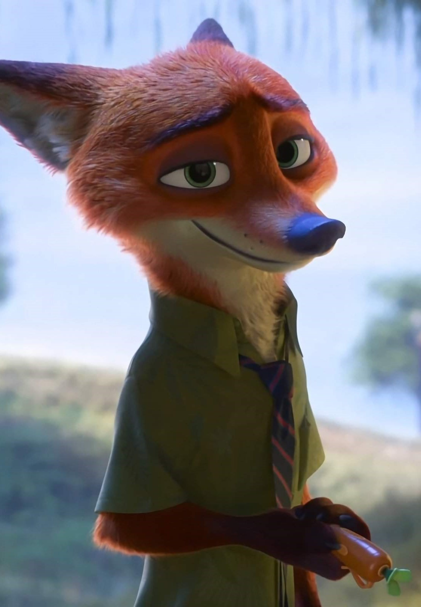
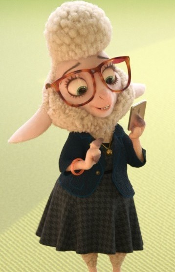
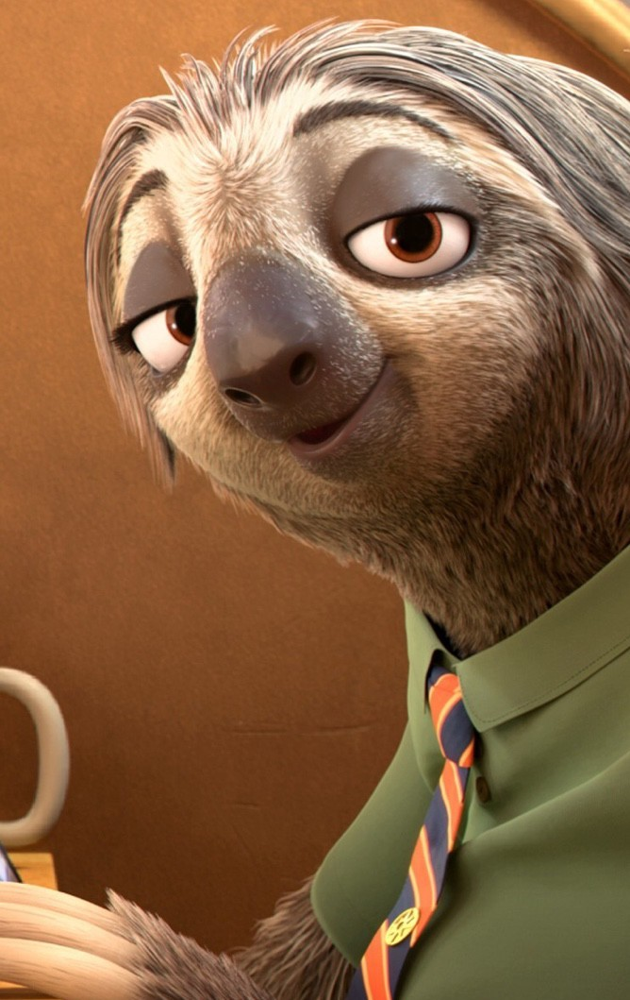
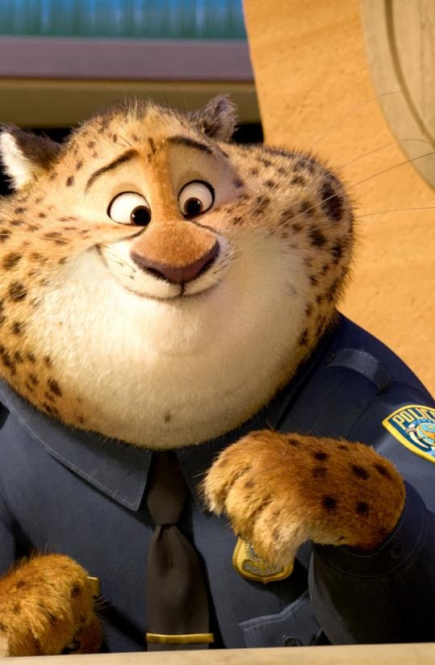

Лучший анимационный фильм 2017 года по версии Американской киноакадемии. Зверополис похож на обычный современный мегаполис, но с одним но: в нём живут не люди, а животные. Как и в любом городе, здесь есть своя полиция, куда на работу выходит молодая зайчиха. Бывалые полицейские — буйволы, гепарды и носороги — сомневаются в её способностях. Но внезапно ей выпадает возможность раскрыть сложное дело и доказать, на что она способна. В напарники зайчихе достаётся местный лис-мошенник Гидеон. От их работы зависит судьба всего города.
Персонажи

Джуди Хопс Главная героиня фильма. Джуди с детства мечтала работать в полиции. Но окружающие считали, что это не для неё, т.к. она кролик. Тем не менее Джуди поступила в полицейскую академию. Сначала у неё ничего не получалось, но она не сдавалась. Она трудилась до седьмого пота и сумела преодолеть все трудности. Джуди, первый кролик в полиции Зверополиса, полна решимости сделать мир лучше, разрушая предвзятые мнения о других видах. Объединившись с лисом по имени Ник Уайлд, она отправляется в свое первое дело, но обнаруживает зловещий заговор.

Ник Уайлд Хитрый и харизматичный лис-мошенник, который невольно становится помощником начинающего офицера полиции Джуди Хопс, расследующей дело о массовом исчезновении животных. Из-за давней детской травмы, он имеет весьма циничный взгляд на жизнь и старается соответствовать стереотипу «хитрого и бессовестного лиса», каким его все и всегда считали. Однако, несмотря на их различия, Ник заводит дружбу с Джуди, и та в итоге помогает ему осознать, что он не должен, следуя предубеждениям общества, быть тем, кем на самом деле не является.

Барашкис Заместитель мэра мисс Барашкис является милой овечкой с негромким голосом и очень пушистой шерстью, которая по жизни находится в подчинении у больших зверей, таких как мэр Златогрив. На первый взгляд мисс Барашкис кажется милой и доброй, но потом выясняется, что она черствая и амбициозная.

Блиц Это трёхпалый ленивец, одетый в зелёную рубашку и песочные брюки. Он так же носит оранжево-чёрный галстук. "Самый расторопный" и "эффективнее всех работающий" по словам Ника ленивец. КВторостепенный комический герой мультфильма «Зверополис», который запомнился многим надолго, вызывая улыбку на лице. Ленивец работает в отделе и известен тем, что он «самый быстрый работник из всех». На деле же Блиц много отвлекается и крайне медлителен, что обусловлено природой. Любит поговорить с коллегами и поделиться с ними всем, о чём думает. Под конец повествования его личность раскрывается с новой стороны, когда Джуди и Ник ловят того за превышением скорости на спортивной машине.

Бенджамин Когтяузер Офицер полиции (сержант-администратор) Зверополиса. Хотя он и работает в полицейском департаменте Зверополиса, где многие животные довольно жёсткие и суровые, Когтяузер невероятно невинный, весёлый и принимающий. Бенджамин очень любит пончики и ведёт малоподвижный образ жизни, поэтому он такой упитанный (ведь в Зверополисе каждый может быть кем угодно, и даже гепард может быть сытым и толстым). Во время конфликта хищников и травоядных был переведён в подвал. Это служит наглядной иллюстрацией того, как ошибочно руководствоваться одними стереотипами, ведь Бен совершенно безобидный, дружелюбный и очень любит общаться с посетителями — совсем не похож на стереотип хищника.